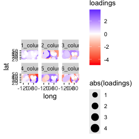

Intro to longpca with nycflights data
Source:vignettes/Intro_to_longpca_with_nycflights_data.Rmd
Intro_to_longpca_with_nycflights_data.RmdIntroduction
If you’ve already read the readme, you can skip to the section PCA the nycflights
This package introduces a novel formula syntax for PCA. In modern
applications (where data is often in “long format”), the formula syntax
helps to fluidly imagine PCA without thinking about matrices. In other
words, it provides a layer of abstraction above matrices. Given the
formula and the (long) data, the code in this package transforms your
data into a proper format for fast PCA via sparse linear algebra. The
package also provides code to 1) help pick the number of dimensions to
compute, 2) diagnose the suitability of PCA (both pre and post PCA), 3)
rotate the PCs with varimax, 4) visualize and interpret the dimensions
uncovered, and (not yet) 5) make predictions. This package uses “PCA” as
a broad term for computing the leading singular vectors of a normalized
(sometimes incomplete) matrix. Some might refer to specific instances as
factor analysis, correspondence analysis, latent symantic analysis,
social network analysis, or low-rank matrix completion, among other
possible terms. This is big-tent PCA, all included. longpca
is in development. So, functions and syntax might change.
The current approach to PCA (principal components analysis) is matrix first. This note begins to explore an alternative path, one that is model first. The formula syntax provides an alternative way to think about PCA that makes matrices transparent; completely hidden, unless you want to see the code.
I hope this makes PCA legible for folks that have not yet learned linear algebra (just like linear models are legible without solving linear systems of equations).
I am personally inspired by this approach because (despite the fact that I love matrices and linear algebra) I find that this model first way of thinking is so much easier and more direct.
This document gives an illustration with a data analysis of the
popular nycflights13 data via PCA. Headline: we find two
seasonal effects (annual and weekly) and also the “fly-over-zone”
(midwest 4ever. ride or die <3 much love to my midwest fam). Code
details follow this analysis.
(Disclaimer: this is very early in this project. So, the syntax and the code is likely to change a great deal. Input is very welcome about ways to improve it.)
Install
The functions for PCA for the People are contained in an R package
longpca. If you do not already have devtools
installed, you will first need to install that:
install.packages("devtools")
devtools::install_github("karlrohe/longpca")Thank you to Alex Hayes for helpful feedback in this process and
suggesting the name longpca.
PCA the nycflights.
To illustrate the code, consider the popular data example
nycflights13 which contains a row for every flight
departing from the 3 main New York City airports during 2013 (LGA, JFK,
and EWR). It includes things like date, destination, and information
about delays.
library(nycflights13)
flights
#> # A tibble: 336,776 × 19
#> year month day dep_time sched_dep_time dep_delay arr_time sched_arr_time
#> <int> <int> <int> <int> <int> <dbl> <int> <int>
#> 1 2013 1 1 517 515 2 830 819
#> 2 2013 1 1 533 529 4 850 830
#> 3 2013 1 1 542 540 2 923 850
#> 4 2013 1 1 544 545 -1 1004 1022
#> 5 2013 1 1 554 600 -6 812 837
#> 6 2013 1 1 554 558 -4 740 728
#> 7 2013 1 1 555 600 -5 913 854
#> 8 2013 1 1 557 600 -3 709 723
#> 9 2013 1 1 557 600 -3 838 846
#> 10 2013 1 1 558 600 -2 753 745
#> # ℹ 336,766 more rows
#> # ℹ 11 more variables: arr_delay <dbl>, carrier <chr>, flight <int>,
#> # tailnum <chr>, origin <chr>, dest <chr>, air_time <dbl>, distance <dbl>,
#> # hour <dbl>, minute <dbl>, time_hour <dttm>There are so many matrices “inside” of this data, but you don’t think of them when you see this data. Many applications are like this. The data does not look like matrix. Instead, it looks like a spreadsheet or a SQL database or a tidy tibble. That is how the users often think about their data. And underneath it, there are so many possible matrices. This code will reveal these possibilities.
The first step to using longpca is the function
make_interaction_model. This requires two arguments, the
data (tidy data in “long format”) and the formula (explained in detail
below).
Right now, there are four ways to specify a model with
make_interaction_model. Hopefully, we can find more.
Perhaps you will have a way?
Once you make an interaction_model, there are many
things you can do. Before running PCA, you can diagnose to
see if the data is “too sparse”, then if so, you can core
to find the dense core of observed data. You can also
pick_dim to estimate how large of a model k
your data can infer.
Here, for the introduction, we will just run PCA right away:
library(nycflights13)
im = make_interaction_model(flights, ~ (month & day)*(dest))
pcs = pca(im, k = 6)This performs PCA. The key innovation is the “formula”:
~ (month & day)*(dest),
which specifies the model that we want. If you are already comfortable with matrices and the SVD, then you can imagine this as the matrix we will apply SVD to (in the future, this will be imagined as fitting a statistical model via least squares).
The basic syntax of the formula is this:
outcome ~ unit * context.
The outcome can be left blank (Specification 1 below), otherwise it
should be a variable in the data. unit and
context can be variables in the data, or they might be
specified by multiple variables in the data. For example, in the formula
~ (month & day)*(dest), the units are specified by
(month & day).
The next section discusses the various ways of using the formula.
Four ways to specify an interaction_model
Specification 1: Empty left-side
The first and most basic use (perhaps also be the most powerful) is to not specify an outcome:
~ (month & day)*(dest).
Specification 1 happens when the left-side of the formula is empty. It specifies a matrix where
- the units (or rows) are indexed by
(month & day), two variables of theflightsdata, - the context (or columns) are indexed by destinations
dest, and - the outcome (or elements of the matrix) are the number of flights to
each
deston each(month & day).
So, there 365 rows (one for each day), about 100 columns (one for
each destination), and the sum of all elements in the matrix is
336,776, the number of rows in the flights data.
Said another way, if you leave the left-side empty, it counts
co-occurrences of (month & day) with dest
and makes a matrix of those co-occurrences. Some people call this matrix
a cross-tab or a contingency table. When we do PCA to this matrix of
counts, some folks call that Correspondence Analysis.
Specification 2: A variable the left-side that counts something
In this formulation, the outcome (on the left-side of the formula)
will have a variable. For example, nycflights13 has the
number of seats available in each plane. We can join this data to the
flights to find the number of seats available on each flight.
dat = flights %>%
select(month, day, dest, tailnum) %>%
left_join(planes %>% select(tailnum, seats))
#> Joining with `by = join_by(tailnum)`Then, we can use the formula,
seats ~ (month & day)*dest
with the new data dat in
make_interaction_model. This is Specification 2.
It happens when (i) we specify an outcome on the left-hand side of the
formula and (ii) we use the default settings of
make_interaction_model.
im_seats = make_interaction_model(dat, seats ~ (month & day)*dest)In this formula above, the units and context are identical to the
example for Specification 1. The difference is that now the outcome
counts the total number of seats that flew to each
destination, on each day.
In fact, Specification 2 is very similar to Specification 1. Imagine
that flights had a variable called 1 and every
element of that varialbe is a numeric 1. Then, the formula
1 ~ (month & day)*(dest)
could be interpreted via Specification 2. And in fact, you can type
that formula without having a variable 1 in your data and
make_interaction_model will understand it the same as
~ (month & day)*(dest).
Specification 3: The outcome variable (the thing on the left-side of the formula) should be averaged
The flights data contains a column arr_delay which gives
the arrival delay for the flight. One possible model is
arr_delay ~ (month & day)*(dest).
It does not make sense to simply add up the arrival delays. It makes
sense to average them. This is specified in
make_interaction_model with the argument
duplicates = "average":
make_interaction_model(flights, arr_delay ~ (month & day)*(dest), duplicates = "average")
This uses the same units and context as the last two examples, but it is helpful to begin imagining some things that correspond to arrival delays and how might they interact. From this, we build our model. For example, in my experience, flights later in the day are more likely to be delayed. Also, weekday flights are worse than weekend flights. I wonder if there is an interaction between them.
day_dat = flights |>
mutate(day = wday(time_hour, label = TRUE, abbr = FALSE))
im_delays = day_dat |>
select(hour, day , arr_delay) |>
make_interaction_model(arr_delay ~ hour*day,duplicates = "average")Specification 3 happens when (i) there is a variable on the
left-hand side of the formula, (ii) duplicates = "average"
in make_interaction_model, and (iii)
typically you then want to use pca_na
instead of pca to compute the principal components:
pc_delays = pca_na(im_delays, k = 3)
#> Taking 3 core. Starting with:
#> 20 rows
#> 7 columns
#> 133 observed values[1] "adding graph summaries (coreness and connected components)."
#> After taking 3 core. There remain:
#> 19 rows
#> 7 columns
#> 133 observed valuesOften, many (or most) of the possible combinations of the (unit,
context) pairs do not appear in the data. For example, there were no
flights to MSN (Madison, Wisconsin) on January 5th. When most of the
possible combinations do not appear, we say that the data is “sparse”.
(You can diagnose the level of sparsity with diagnose and
you can look at a “dense subset” of the data with
core).
If any of the combinations do not appear in the data, then you need
to decide if PCA should understand those values to be zero or
NA. You need to think about your problem to decide which
one makes sense. In Specifications 1 and 2, it makes sense to make the
missing elements zero because the sum of zero numbers is zero.
In this case, you use the function pca. In Specification 3,
it likely makes sense to have the missing values be NA
because the average of zero numbers is NA. In this
case, call pca_na which computes the PCs via
softImpute::softImpute.
Another way to specify this model (i.e. a different interaction to
explore) would be to make the unit (day & hour) and the
context dest:
im_dest_delay = day_dat |>
make_interaction_model(arr_delay ~ (day&hour)*dest,duplicates = "average")Specification 4: The variable after the * is a text field (or a sequence) that needs to be parsed
There are no good motivating examples for Specification 4 in the
flights data. Instead, please see the
parse_text vignette. You can access that functionality
with the argument parse_text = TRUE inside
make_interaction_model.
What is inside the output of pca
The output of pca (and pca_na) contains the
pc’s and their loadings in a tidy format:
im = make_interaction_model(flights, ~ (month & day)*(dest))
pcs = pca(im, k = 6)
pcs$row_features %>% sample_n(size = 3)
#> # A tibble: 3 × 12
#> month day n row_num degree weighted_degree pc_1_rows pc_2_rows pc_3_rows
#> <int> <int> <int> <int> <int> <dbl> <dbl> <dbl> <dbl>
#> 1 10 23 975 143 84 975 1.03 -1.02 0.684
#> 2 3 20 970 161 83 970 1.03 1.28 1.17
#> 3 8 26 982 109 87 982 1.03 -0.827 0.00865
#> # ℹ 3 more variables: pc_4_rows <dbl>, pc_5_rows <dbl>, pc_6_rows <dbl>
pcs$column_features %>% sample_n(size = 3)
#> # A tibble: 3 × 11
#> dest n col_num degree weighted_degree pc_1_columns pc_2_columns
#> <chr> <int> <int> <int> <dbl> <dbl> <dbl>
#> 1 LEX 1 104 1 1 0.00135 -0.00124
#> 2 MKE 2802 35 365 2802 0.935 -0.0786
#> 3 BWI 1781 48 365 1781 0.726 1.94
#> # ℹ 4 more variables: pc_3_columns <dbl>, pc_4_columns <dbl>,
#> # pc_5_columns <dbl>, pc_6_columns <dbl>Because they are tidy, it makes them pretty easy to ggplot.
First, let’s do the units (i.e. dates/rows). To interpret PC’s, it is best to plot it in the native space. For dates, the native space is a time series or a sequence. Let’s plot it there. I give my interpretation after the plots.
im = make_interaction_model(flights, ~ (month & day)*(dest))
pcs = pca(im, k = 6)
pcs$row_features %>%
mutate(date = make_date(day = day, month=month, year = 2013)) %>%
select(date, contains("pc_")) %>%
pivot_longer(contains("pc_"), names_to = "pc_dimension", values_to = "loadings") %>%
ggplot(aes(x = date, y = loadings)) + geom_line() +
facet_wrap(~pc_dimension, scales= "free") + geom_smooth()
#> `geom_smooth()` using method = 'loess' and formula = 'y ~ x'I always think of the first PC as the “mean”. What we see is that
flights are more or less constant throughout the year (see y-axis). I
presume that the oscillations are for the weekends. pc_1
says that, across destinations, there are more flights during the work
week and fewer flights on the weekends. The second pc gives a seasonal
effect (fewer flights in winter, more in summer); importantly, after
pc_1, some destinations will have negative values of this
(i.e. more in the winter, fewer in the summer). The third pc is positive
on weekend destinations (more flights on the weekends and fewer during
the weekdays relative to pc_1). Again, like
pc_2 some destinations will have a negative value
(i.e. more flights on the weekends and fewer during the weekdays
relative to the previous two pc’s). The last three are harder to
interpret. My uninformed guess is that it is some artifact of airline
decisions. If you have a guess, I’d love to hear it. Also, later on with
pick_dim, we have some evidence that they are noise.
Now, let’s do the columns (i.e. destinations). The “native space” for
destinations is a map. Let’s plot it there. Be sure you have
maps installed.
airports %>% sample_n(size = 3)
#> # A tibble: 3 × 8
#> faa name lat lon alt tz dst tzone
#> <chr> <chr> <dbl> <dbl> <dbl> <dbl> <chr> <chr>
#> 1 09J Jekyll Island Airport 31.1 -81.4 11 -5 A America/New…
#> 2 GTB Wheeler Sack Aaf 44.1 -75.7 690 -5 A America/New…
#> 3 MTH Florida Keys Marathon Airport 24.7 -81.1 7 -5 A America/New…
# first, get the lat and lon for the airports:
airport_dat = pcs$column_features %>%
left_join(airports %>% select(dest=faa, lat,lon)) %>%
select(lat, lon, contains("_col")) %>%
pivot_longer(contains("pc_"),
names_to = "pc_dimension", values_to = "loadings") %>%
drop_na()
#> Joining with `by = join_by(dest)`
library(maps)
usa_map <- map_data("state")
p <- ggplot() +
geom_polygon(data = usa_map, aes(x = long, y = lat, group = group),
fill = "white", color = "black") +
coord_fixed(1.3, xlim = c(-125, -65), ylim = c(25, 50))
# i'm only keeping lower 48 states, dropping Anchorage and Honolulu.
p + geom_point(data = airport_dat, aes(x = lon, y = lat,
size = abs(loadings), color = loadings)) +
facet_wrap(~ pc_dimension) +
scale_color_gradient2(low = "red", high = "blue", mid = "white")
Here pc_1 should align with larger and smaller airports
(bigger airports <-> more flights throughout the year).
pc_2 is negative on Denver and Florida and positive in
Maine. Looking back at the time series plots, I interpret this to mean
that people go to Denver (skiing) and Florida (beach) in the winter and
Maine (coastline) in the summer. pc_3 picks up the
“fly-over zone”… looking back at the time series, folks prefer to travel
here during the work week. So, the blue areas are more weekend
(vacation) destinations and the red areas are the fly-over. The other
pc’s are difficult for me to interpret (my guess is that they are weird
artifacts of airline things… noise). We do see that the last three are
heavily localized on a few airports, looking back at the pairs plots you
can see this localization. Given that, my sense is that they are not so
interesting, but if I needed to make sense of them, I would print out
their most extreme elements and dig into those airports. Making this
function is a todo item.
So, using the code is easy. You just need to specify a formula. It’s fun to think of other combinations and easy to try them out.
There are three functions that you might like diagnose,
pick_dim, and plot that are explained
below.
A deeper look inside the code.
What is an interaction_model?
To make maximum use of this package, it is helpful to think about
models, not matrices. Each of the key functions in
this package is handling a class interaction_model:
formula = ~ (month & day)*dest
im = make_interaction_model(flights, formula)
class(im)
#> [1] "interaction_model"
names(im)
#> [1] "interaction_tibble" "row_universe" "column_universe"
#> [4] "settings"im is a list of four elements. First,
$interaction_tibble which can be thought of as a sparse
matrix in triplet form; get_Matrix(im) uses this to
construct a sparse matrix. Then, $row_universe and
$column_universe which can be thought of as holding the
information corresponding to each row/column. Finally,
$settings contains various details about the
construction.
Let’s do a more careful analysis
Examining the matrix sparsity
This package contains a few helper functions. First, if lots of rows
or columns have very few non-zero elements, this can cause “localization
issues”. The matrix needs to be “dense enough” for the PCA to find good
stuff. So, diagnose prints some simple diagnostics and
plots the “degree distribution” for the rows and columns. Here, “degree”
is the number of non-zero elements in that row or column.
# inspect "degree distributions" with this funciton:
# recall that im is the interaction_model defined above.
diagnose(im)#> # A tibble: 6 × 3
#> measurement dest `month & day`
#> <chr> <dbl> <dbl>
#> 1 number_of_items 105 365
#> 2 average_degree 297 86
#> 3 median_degree 365 86
#> 4 percent_le_1 2 0
#> 5 percent_le_2 2 0
#> 6 percent_le_3 2 0For example, if either average degree was less than 10, then I might
be worried. Another diagnostic in the print out is
percent_le_x which gives the percent of rows/columns that
have row/col sums less than or equal to x. If a majority of
rows or columns has degree less than or equal to 3, then I would be
worried. These are clues that the matrix is very sparse and you might
have trouble. Issues with sparsity will likely manifest in localization;
something that will be evaluated in functions below.
One possibility is to take the “core”:
im_cored = core(im,core_threshold = 3)
#> [1] "adding graph summaries (coreness and connected components)."
nrow(im$column_universe)
#> [1] 105
nrow(im_cored$column_universe)
#> [1] 103
diagnose(im_cored)
#> Warning in scale_y_log10(): log-10 transformation introduced
#> infinite values.
#> Warning: Removed 27 rows containing missing values or values outside the scale range
#> (`geom_bar()`).#> # A tibble: 6 × 3
#> measurement dest `month & day`
#> <chr> <dbl> <dbl>
#> 1 number_of_items 103 365
#> 2 average_degree 303 86
#> 3 median_degree 365 86
#> 4 percent_le_1 0 0
#> 5 percent_le_2 0 0
#> 6 percent_le_3 0 0This finds the largest subset of rows and columns such that each row
and column has at least core_threshold = 3 data points (and
it will also return the largest connected component). In this case, it
discards two destination airports, LEX and LGA:
im$column_universe |> anti_join(im_cored$column_universe, by = "dest")
#> # A tibble: 2 × 3
#> dest n col_num
#> <chr> <int> <int>
#> 1 LEX 1 104
#> 2 LGA 1 105Picking k with cross-validated eigenvalues
When doing a PCA, you need to pick the model size \(k\). The way that we do this in my lab is
with cross-validated eigenvalues. It gives you a Z-score and a p-value.
Here is the arxiv paper.
Alex Hayes and Fan Chen made it a proper R package on CRAN gdim.
For this example, it picks k=4.
cv_eigs
#> Estimated graph dimension: 4
#>
#> Number of bootstraps: 5
#> Edge splitting probabaility: 0.1
#> Significance level: 0.05
#>
#> ------------ Summary of Tests ------------
#> k z pvals padj
#> 1 166.9096296 0.000000e+00 0.000000e+00
#> 2 12.5328707 2.467185e-36 2.467185e-36
#> 3 8.7270943 1.306496e-18 1.306496e-18
#> 4 4.7824034 8.660580e-07 8.660580e-07
#> 5 0.6311604 2.639678e-01 2.639678e-01
#> 6 -2.8350333 9.977090e-01 9.977090e-01
#> 7 -5.9380729 1.000000e+00 1.000000e+00
#> 8 -6.0137710 1.000000e+00 1.000000e+00
#> 9 -7.7210977 1.000000e+00 1.000000e+00
#> 10 -7.6142011 1.000000e+00 1.000000e+00Notice that the top-line of the printout says that the estimated
graph dimension is 4. So, we will use k=6 and see that in
this example they become harder to interpret. This is what we would
expect if it was just noise… but also, maybe they are not just
noise?
Let’s get the people some PCA
For right now, the default of make_interaction_model is
that if there are multiple rows of the long data that have the same
values for (month & day) and also for
dest, then the value inside the matrix is a sum of
the values on the left hand side of the formula. If there is no variable
specified on the left hand side, then it is like imagining there is an
additional column in your data, 1, that has the value 1 in
every row. So, formula = ~ (month & day)*(dest) is
equivalent to formula = 1 ~ (month & day)*(dest). By
summing over the outcomes, if it is a 1, then it
counts how many times that entry appears.
Because it is a count, and the variance stabilizing transformation
for a Poisson is square root, the default in the code for
pca is to square root each count. Then, the code computes
the normalized and regularized Laplacian L (using the
number of non-zero entries as the degree). Then, computes the leading
k singular vectors. This is all done with sparse linear
algebra via the packages Matrix and irlba.
The row_features and column_features are
the PC’s and loadings (I don’t prefer those old terms).
middle_B gives the singular values. settings
contains some details that are handy in later functions.
sample_n(pcs$row_features, size = 3)
#> # A tibble: 3 × 12
#> month day n row_num degree weighted_degree pc_1_rows pc_2_rows pc_3_rows
#> <int> <int> <int> <int> <int> <dbl> <dbl> <dbl> <dbl>
#> 1 4 23 965 177 82 965 1.04 0.146 -0.671
#> 2 6 26 995 40 88 995 1.04 -0.719 -0.00845
#> 3 6 22 812 307 88 812 0.928 -0.368 2.24
#> # ℹ 3 more variables: pc_4_rows <dbl>, pc_5_rows <dbl>, pc_6_rows <dbl>
sample_n(pcs$column_features, size=3)
#> # A tibble: 3 × 11
#> dest n col_num degree weighted_degree pc_1_columns pc_2_columns
#> <chr> <int> <int> <int> <dbl> <dbl> <dbl>
#> 1 EYW 17 99 17 17 0.0215 0.423
#> 2 SDF 1157 56 365 1157 0.596 -0.526
#> 3 HDN 15 100 15 15 0.0183 0.612
#> # ℹ 4 more variables: pc_3_columns <dbl>, pc_4_columns <dbl>,
#> # pc_5_columns <dbl>, pc_6_columns <dbl>Notice that these features are in a wide and tidy form, making it
easy to lubridate::make_date (for
row_features) and left-join with airports (to get latitude
and longitude) for column_features.
Diagnostic plots
You can plot(pcs). It makes these five plots, each
described after all plots are displayed.
plot(pcs) #> Press [Enter] to continue to the next plot...#> Press [Enter] to continue to the next plot...
#> `geom_smooth()` using formula = 'y ~ s(x, bs = "cs")'
#> Press [Enter] to continue to the next plot...#> Press [Enter] to continue to the next plot...These are the five plots:
- Screeplot: The top
ksingular values ofL.
- Better screeplot: its singular values
2:k(because the first one is usually dominant and difficult to see an elbow past it).
- A “localization plot” which is very similar (maybe exact?) to this
stuff; for each row (and column) compute its degree and its leverage
score. Take the log of both. Fit a linear model
log(leverage)~log(degree)and plot the residuals againstlog(degree). If there is localization, I suspect that there will be a big curl on the right side. - Pairs plot of
row_features. This is the plot emphasized in the varimax paper. In these example plots below, we do not see very clear radial streaks. - A pairs plot for
column_features. In both pairs plots, if there are more than 1000 points, then the code samples 1000 points with probability proportional to their leverage scores. It will plot up tok=10dimensions. Ifkis larger, then it plots the first 5 and the last 5.